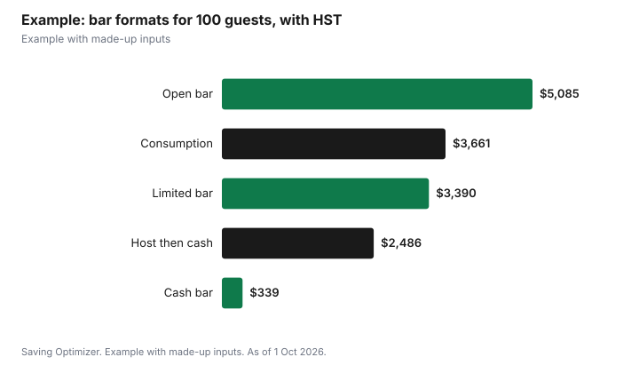

Weddings · Canada
Open Bar vs Cash Bar vs Limited Bar at a Canadian Wedding
An open bar costs the most but is simplest for guests; a cash bar costs the couple least but asks guests to pay; a limited bar of beer, wine and one signature cocktail sits in between. In Ontario, if the venue has no liquor licence, a special occasion permit is needed: $50 a day if guests do not pay for drinks, and $150 a day if you run a cash bar or sell drink tickets. Licensed venues use their own licence and their own bar pricing, usually per person by the hour or by consumption. Service must stop by 2 a.m. under a permit, and no one under 19 may be served.
Key takeaways
- Open bar: most expensive, easiest for guests.
- Limited bar: beer, wine and a signature drink cut costs.
- Cash bar or sold drink tickets: needs Ontario's $150 sale permit at unlicensed venues.
- Free drinks at unlicensed venues: $50 a day no-sale permit.
- Per-person bar packages are predictable; consumption billing can be cheaper or more expensive.
- Example with made-up inputs: five bar formats for 100 guests.
Bar formats compared
| Format | Who pays | Ontario permit at an unlicensed venue |
|---|---|---|
| Open bar | Couple | No-sale, $50 a day |
| Limited bar (beer, wine, signature cocktail) | Couple | No-sale, $50 a day |
| Drink tickets given free | Couple | No-sale, $50 a day |
| Drink tickets sold to guests | Guests | Sale, $150 a day |
| Host bar then cash | Couple, then guests | Sale, $150 a day |
| Cash bar | Guests | Sale, $150 a day |
Etiquette views differ. Some guests expect drinks to be hosted; others are used to cash bars. A common compromise is hosting wine with dinner and a limited bar, or hosting the bar for the cocktail hour and dinner.
Consumption versus per-person pricing
Licensed venues usually offer two pricing models. Per-person packages charge a set amount per guest for a set number of hours, which is predictable but charges for non-drinkers and children. Consumption billing charges for each drink or opened bottle, which can be cheaper for lighter-drinking crowds but is harder to predict. Ask for both quotes, what counts as a drink, whether partial bottles are charged, and whether bartender fees, service charge and tax are added.
| Model | Pros | Cons |
|---|---|---|
| Per person, per hour | Predictable; easy budget | Pays for non-drinkers |
| Consumption, per drink | Pay only for what is poured | Hard to predict; needs monitoring |
| Consumption, per bottle | Simple for wine and beer | Opened bottles charged even if not finished |
| Supply your own (where allowed) | Lowest cost per drink | Permit, staff, insurance and logistics |
Permits and venue rules in Ontario
According to the LCBO's special occasion permit guidance, you need a permit any time alcohol is served or sold somewhere other than a licensed establishment or a private place such as a residence. A no-sale permit is $50 a day and requires that guests not be charged for drinks or admission. A sale permit is $150 a day and applies to cash bars, drink tickets sold to guests and events with a cover charge. A private event permit is for invited guests only and cannot be advertised. Apply at least 10 days before a private event; fees are non-refundable, and service hours must fall between 9 a.m. and 2 a.m. The person applying must be at least 19.
Corkage and bring your own wine
Some Ontario restaurants and banquet rooms hold a bring-your-own-wine endorsement from the AGCO. It allows guests to bring sealed, commercially made wine, which staff must open and serve; in a banquet room, the wine must be served while guests are seated and eating a meal. Homemade and fortified wine are not allowed under the endorsement, and it cannot be combined with a caterer's endorsement. The venue sets any corkage fee, so ask for it in writing.
Guest safety
Under a permit, you cannot let anyone under 19 drink, and you must check ID for anyone who appears under 19. Smart Serve responsible-service training is not required for permit holders but is available. Ontario does not require permit holders to carry party liability insurance, but many venues do, so check your contract. Practical steps: hire trained bartenders, serve food throughout the evening, offer non-alcoholic options, stop service before the end and arrange rides or a shuttle.
Non-alcoholic options and dry weddings
A good non-alcoholic menu matters whichever format you choose: pregnant guests, drivers, people who do not drink for religious or health reasons and children all need something better than tap water. Mocktails, sparkling juices, iced tea and alcohol-free beer and wine are easy to add and are usually cheaper per serving than alcohol. Ask whether the bar package includes them or charges extra.
A dry wedding, with no alcohol at all, removes the permit question entirely and cuts the bar budget to soft drinks and coffee. If you choose this, say so on the invitation or wedding website so guests know what to expect, and consider a daytime reception or a dessert bar to keep the mood festive.
Decision guide
- Tight budget: limited bar or wine with dinner only.
- Guests travelling far: consider hosting at least part of the bar.
- Many non-drinkers: consumption billing may be cheaper.
- Unlicensed venue: budget the permit, bartenders and insurance.
- Long reception: set a last call well before the end.
Example with made-up inputs
These numbers are an example with made-up inputs. For 100 guests at a licensed venue in Ontario, before any service charge: a five-hour open bar package at $45 per person is $4,500; a limited bar package at $30 is $3,000; consumption billing at an average of four drinks per adult for 90 adults at $9 is $3,240; a host bar for two hours at $22 per person, then cash, is $2,200; a cash bar costs the couple $0 in drinks but may carry a made-up $300 bartender fee. Adding 13% HST to each: $5,085, $3,390, $3,661.20, $2,486 and $339.
| Format | Before tax | With 13% HST |
|---|---|---|
| Open bar, 5 hours | $4,500 | $5,085.00 |
| Limited bar | $3,000 | $3,390.00 |
| Consumption, 360 drinks | $3,240 | $3,661.20 |
| Host 2 hours, then cash | $2,200 | $2,486.00 |
| Cash bar (bartender fee) | $300 | $339.00 |

Steps
- Decide who pays and which drinks to host.
- Ask the venue for per-person and consumption quotes.
- Check whether a permit is needed and which type.
- Hire trained bartenders if supplying your own.
- Plan non-alcoholic options and safe rides.
- Put last call and pricing in the contract.
Common mistakes
- Getting a no-sale permit and then selling drink tickets.
- Forgetting service charge and tax on bar packages.
- Paying per person for many non-drinkers.
- Running service past the permit hours.
- Not checking venue insurance requirements.
Related: buying your own wedding alcohol and special occasion permits.
Sources
- helloLCBO, Special Occasion Permit (SOP) FAQs, hellolcbo.com, as of 1 Oct 2026.
- Alcohol and Gaming Commission of Ontario, Apply for a bring-your-own-wine endorsement, agco.ca, as of 1 Oct 2026.
- Alcohol and Gaming Commission of Ontario, Special occasion permits, agco.ca, as of 1 Oct 2026.
- Canada Revenue Agency, GST/HST rates, canada.ca, as of 1 Oct 2026.
- Bar package prices, drink counts and bartender fees in the example are made-up inputs.
Frequently asked questions
Is a cash bar at a wedding rude?
Views differ. A common compromise is hosting wine with dinner or a limited bar.
Do I need a permit for a wedding cash bar in Ontario?
At a venue without a liquor licence, yes: a sale permit at $150 a day.
What permit do I need for a free bar at an unlicensed venue in Ontario?
A no-sale special occasion permit, $50 a day.
Is per-person or consumption bar pricing cheaper?
It depends on your guests. Consumption billing can be cheaper for light drinkers; per-person is more predictable.
Can we bring our own wine to a wedding venue?
Only where the venue allows it, such as an Ontario restaurant or banquet room with a bring-your-own-wine endorsement. The venue sets any corkage fee.
What time must the bar close under a permit?
Ontario permits allow service between 9 a.m. and 2 a.m.
Researched and drafted with AI assistance and fact-checked against official Canadian sources. How we create content.
Disclosure: Saving Optimizer may earn a commission if a partner link is added later. No partnership is claimed on this page. Education only.